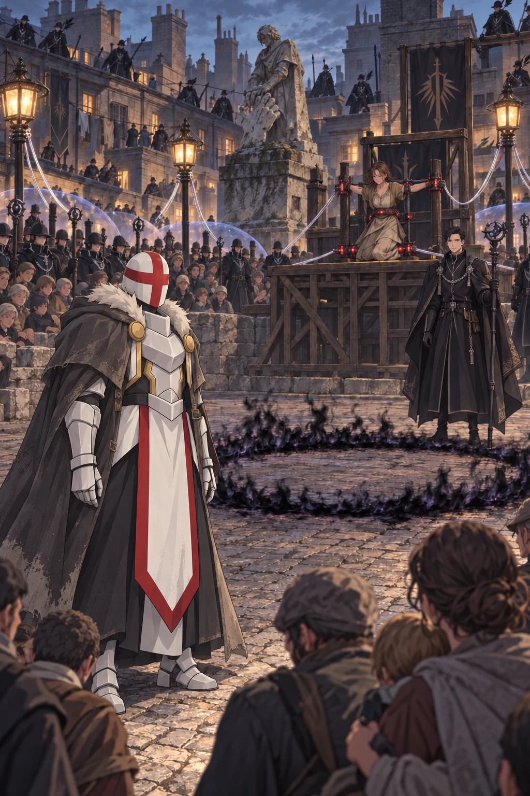
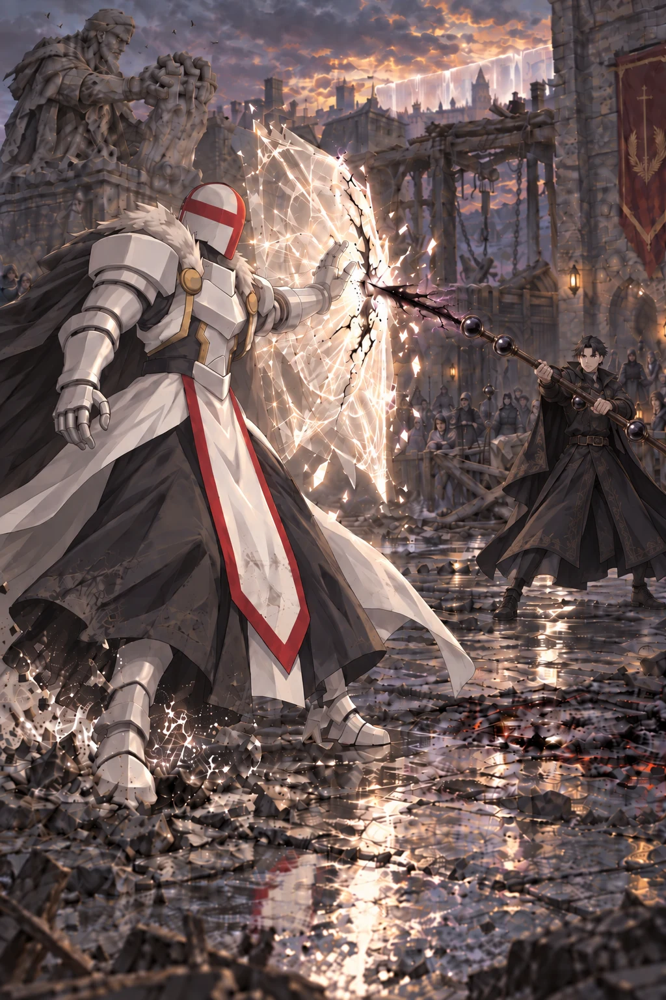

Volume One · Chapter Seven
Come Out, White Mage
The Archmage’s command entered the abandoned kiln through every broken place at once.
It spoke from the black seal inside the street lamp. It trembled through the chain stretched across the glassworks lane. Even the cracked firing trays seemed to hold the Archmage’s voice for a moment after the words ended.
Ultimos did not answer.
He stood beneath the fallen section of roof and watched the black emblem in the lamp. Its fire possessed no heat. Four narrow channels entered the glass housing from different directions, each carrying a separate elemental color until the seal consumed them.
“He’s using the containment network,” Orin whispered.
“Yes.”
Ultimos raised one hand toward the distant lamp without touching it. A pulse crossed the black emblem, traveled into the street, and divided beneath the paving.
“The voice is being repeated by the same structure that closes your roads.”
Feran spoke again.
“The unidentified caster responsible for the attack upon the Hall of Liberation is ordered to submit to emergency examination. You have employed prohibited non-elemental effects, resisted civic security, and continued to travel with two wanted witnesses.”
Orin looked at Kisaya.
The Archmage had used white mage as a summons, but not as a charge the city could record. In the formal order, Ultimos remained an unidentified caster using prohibited effects.
Either Feran doubted the name, or he meant to keep his belief out of the official account.
“That’s careful,” Orin said.
Kisaya peered through the gap in the kiln wall. “He can be careful while threatening us. Impressive.”
“He has not named either of you yet,” Ultimos said.
Boots struck the lane outside.
The checkpoint Wardens lowered their chains and turned toward the main Ashward road. People were being pushed away from the narrower streets, not toward their homes but north, where the roofs opened around the old gatehouse junction.
Then a woman shouted beyond the cooperage roofs.
“He’s a child! Leave him—”
A current meant to carry black mage orders caught the first words and flung them clear across the lanes. The rest vanished beneath scraping shutters and repeated commands to clear the road, but Orin knew the voice.
He had heard that voice break as she wept over a child’s healed hand.
Orin reached the wall before he remembered concealment. Kisaya caught the back of his coat and dragged him beneath the gap.
“That was her,” he said.
“Who?”
“The boy’s mother.”
The same recognition reached Kisaya a breath later. Her face emptied.
Ultimos had already crossed the kiln. “Where does that road lead?”
“The old gatehouse,” Kisaya said. “The monument is there.”
The weathered archmage breaking the giant white hand.
People had streamed around it without looking the night before.
Now the Conclave was driving half the Ashward toward it.
Ultimos studied the rooftops through the collapsed ceiling. “Show me a position from which the junction can be observed without crossing the street.”
Kisaya pointed toward the rear kiln wall. “There’s a joined roof above the shuttered cooperage. Ressa’s crew patched it during the bakery flue job last spring.”
“Can it bear me?”
She looked at the white armor concealed beneath his coat. “For a little while.”
Ultimos stepped onto the broken firing shelf. Kisaya went first, climbing through a split in the brick and finding holds Orin could not see. He followed her into a narrow yard where old clay pipes lay stacked beneath weeds. Ultimos came last. The repaired coat brushed the wall, its reshaped cloth sliding over broken mortar without snagging.
They crossed a lean-to, an abandoned drying frame, and two roofs that complained beneath Ultimos’s weight. Wardens moved through the lanes below in groups of four. Each group carried a black-glass focus, and each focus answered the lamps with a low red pulse.
No one looked up. The danger had been ordered into the streets, so the Wardens searched doors.
Kisaya stopped behind a chimney at the cooperage roof.
The old gatehouse junction lay below.
It was not a square. Four working streets had simply widened around the remains of a stone arch and never narrowed again. The waist-high Liberation monument stood beneath it, rain-softened archmage and broken white fingers nearly lost beneath four centuries of soot.
The cooperage placed them north of the junction. The bakery bordered its eastern arm, while Nema’s lane lay farther south beyond the crowded roofs.
A wooden proclamation platform had been raised beside the monument.
Sela knelt at its center.
Orin learned her name when Feran spoke it to the district.
“Sela of Furnace Lane stands under emergency judgment. Yesterday afternoon, West Clinic recorded a severe cooking burn to her son’s hand. A medical inspection ordered after the Hall attack found that hand fully restored by prohibited practice. For his protection, the child remains under guarded observation at West Clinic. Sela has concealed the source, obstructed a maximum-containment inquiry, and refused to identify associates of the wanted witnesses.”
Her wrists were held apart by bands of black metal fixed to two upright posts. More bands crossed her ankles and waist. Red light traveled through them at the pace of a slow heartbeat.
Black mages held the four streets in disciplined lines. At the center of each formation stood a Warden, the silver chain of civic office bright against black robes. Their wards overlapped without touching, leaving no clear approach. Earth mages had raised low barriers to divide the crowd from the platform. Wind workers stood on the surrounding roofs with black feathers tied beneath their collars.
Four exposed silver cables crossed the paving, one from each corner lamp to Sela’s platform. They belonged to her restraints.
Orin understood why Feran had filled it with people instead of clearing them away. The junction was also a theater. If Ultimos submitted, hundreds would carry the lesson home. If he proved too strong, those same lives gave Feran something else to threaten.
At its western edge stood Archmage Feran.
Orin had seen his face stamped on proclamation sheets and rendered in black glass above public trials. The real man looked scarcely thirty. Dark hair lay close to his head, and the severe black coat beneath his mantle had been fastened to the throat despite the evening heat. His staff was taller than he was, dark wood enclosed at intervals by black rings.
Before that evening, Orin had never stood within sight of an Archmage. Few people in the junction could have. Archmages appeared in proclamations and black glass; Wardens carried their orders into streets like these. Feran’s presence in the Ashward announced that the ordinary layers of authority had failed. Parents drew children against their legs. Laborers who had been muttering lowered their eyes. Even the Wardens nearest him left a wider space than their formation required.
Nothing about Feran needed to announce power. Everyone else had arranged themselves around it.
Feran faced the crowd rather than Sela.
“The sentence is suspended until the next district bell. It will remain suspended if the rogue caster presents himself inside the marked circle and submits without resistance.”
Black fire drew a ring in the street twenty paces from the platform.
The black circle was a second spell, separate from Sela’s execution circuit. Buried lines tied it to all four formations holding the streets. If Ultimos stepped inside, earth would close around his feet, wind would force his arms against his sides, and fire would fold inward from every direction. It was designed to give him no single spell to study or dismantle. Dozens of mages would strike in the same heartbeat and restore each binding as quickly as he broke it. Orin had watched Ultimos defeat every element alone. He had never seen him withstand an entire district’s power forced into one patch of street. Even Ultimos might not escape before the circle closed.
Sela lifted her head.
Her hair had come loose from its knot. A bruise darkened one side of her mouth, but her voice carried when a wind mage extended two fingers toward her.
“Don’t come.”
The crowd shifted.
Feran looked back at her.
Sela pulled against the restraints. The red light quickened, and pain closed her voice for a moment. She forced the words through it anyway.
“If you can hear me—don’t. He’ll kill you too.”
The wind mage dropped his fingers. Sela’s voice vanished from the junction.
Feran did not rebuke her. He turned toward the black circle and waited as though her refusal had been another expected part of the demonstration.
Orin’s hands had closed around the chimney brick.
Sela’s son had opened and closed his restored fingers against her cheek. That was everything she had done. West Clinic’s record had led the inspectors to the healed hand, and Sela had chosen those restraints rather than give them Nema’s name.
Ultimos watched the red pulse pass through the bands around her.
“We leave,” he said. “We reach Nema before the search line does.”
Kisaya turned on him. “No.”
The word came loudly enough that Orin expected every Warden below to look up.
None did. Feran’s voice had begun again, repeating the terms through the city.
Ultimos moved back from the chimney. “If I answer this demand, they will take another person tomorrow.”
“She is not a demand.” Kisaya followed him across the roof. “She is a person.”
“She is both. Feran made that true when he placed her there.”
“If I enter that circle, I surrender the archive, the other seals, and every surviving practitioner I have not found. If this threat succeeds once, every healer, witness, laborer, and child observed near us becomes another restraint.”
“You healed her son,” Orin said. “Feran chose this, but your choice gave him the trail to her. You can survive the cost of refusing him. She can’t.”
Kisaya stepped between them. “We’re not asking you to surrender. We know these roofs and you don’t. Let us help you find another way.”
Ultimos looked back at the platform.
“Where can the junction be entered without using those streets?” he asked.
Kisaya answered immediately. “Below.”
She dropped to one knee and pointed toward the platform. “The center is an old lift frame. The city thinks it’s fixed, and the conduit to its brake is listed as collapsed. That’s why every cable and ward stops at the rim. I can reach it through the bakery.”
Orin followed the four silver cables to their hooked couplings. “Drop the frame and those tear free.”
“The bands stay locked,” Ultimos said.
“There’s a service pin beneath the yoke and a wrecking bar beside the brake. I can free her.”
“And the conduit?”
“It runs past Nema’s lane.”
Orin looked from Feran to the empty black circle. “He wants you inside that more than he wants Sela dead. Once you appear, he’ll watch you instead of the platform.”
“He may execute her when I refuse.”
“Not before he tries to make her death look like your choice.”
The first warning stroke sounded. The district bell would follow in five minutes.
“Go,” Ultimos told Kisaya. “Three knocks, then one. Orin, when you hear them, show me your left arm. When I raise my hand, close your eyes. I will provide the distraction and cover her escape.”
Kisaya crossed the next gap on a plank no wider than her foot. At the far side, she pulled it after her and disappeared among the chimney pots.
Ultimos moved away from the chimney.
“Where are you going?” Orin asked.
“To answer the summons.”
He crossed the roof toward the northern side and vanished behind the ridge.
The second warning stroke rolled across the roofs.
Two wind Wardens landed on the northern roof, one carrying the crude sketch from the Hall. They searched the chimneys while arguing quietly over whether the armor itself was a focus. Orin remained still until they crossed the next ridge.
At the eastern edge of the junction, the bakery chimney released a sudden cloud of black soot.
No one below looked at it. Ashward chimneys did worse every evening.
Kisaya had reached the warming conduit.
Feran spoke through the opened lamp beside the platform.
“One interval remains.”
The crowd had grown quiet enough that Orin could hear Sela’s restraints whenever she moved.
Feran approached her.
“You have protected someone who abandoned you,” he said.
His voice did not carry into the lamps this time. The words belonged to the junction and the people forced to witness it.
Sela looked up at him. “He healed my boy.”
“An unknown caster altered your child with an unlicensed discipline. You have no means of knowing what was done.”
“I know he can use his hand.”
A murmur moved through the crowd.
“Tell me where the healing occurred,” he said. “Name whoever received you there, and the judgment can be reviewed.”
Sela looked past him at the people gathered beyond the earth barriers.
“No.”
Feran returned to his staff.
Three muffled knocks rose from beneath the proclamation platform.
A fourth followed after a pause.
Orin stood.
Every instinct told him to remain behind the chimney. He rose anyway and extended his left arm beside it.
The younger wind Warden on the northern roof turned.
So did a man entering the junction from the north.
The northern formation saw him as he reached its line. Its patrolling mage lifted one hand. Spells gathered but did not release. The mages feeding the black circle remained in their marked positions, leaving Ultimos a narrow path between them.
Ultimos came through the crowd instead of approaching along the empty western road Feran had left open. People moved aside before they knew why. The repaired charcoal coat opened as he walked, no longer hiding the breadth of the white armor beneath it. Evening light caught the gauntlets. The deep hood fell back.
The smooth white helmet and its red cross faced the Archmage of Veyr.

Orin dropped behind the chimney.
The third warning stroke ended.
Feran stopped at the western edge of the platform. The red pulse in Sela’s restraints quickened, but his staff did not descend.
Ultimos halted ten paces short of the black circle.
“You called,” he said. “Speak.”
The words carried without help from the lamps in the silent junction.
The crowd had become quiet enough to hear the faint scrape of metal as Feran adjusted his grip on the staff.
“Enter the circle,” Feran said.
“Release the woman.”
“Your obedience releases her.”
“Sparing her only if I obey is not clemency.”
A low, uneasy murmur moved through the crowd.
Feran’s expression did not change.
“The sentence is lawful. Your submission permits clemency.”
“You selected the sentence because you expected me to prevent it.”
“I selected a material witness whose concealment places this district in danger.”
“You selected a mother after I healed her child.”
The district bell began to move.
Its mechanism groaned inside the western tower. Feran raised his staff. Black fire traveled down its lowest ring and entered the four silver cables leading to Sela’s platform.
This time there was nothing concealed to interpret.
The red light in Sela’s restraints became flame. It crawled over the outer faces of the bands and gathered along their inner edges without yet touching her skin. The bell had not yet sounded.
“Enter the circle,” Feran said.
Ultimos lifted one hand.
Orin closed his eyes.
White light opened above the platform.
It neither struck Feran nor entered the lamps or restraints. A sphere no larger than a clenched fist became brighter than the evening could contain.
The junction vanished inside it.
Even through his eyelids, Orin saw the bones of his raised hand.
The crowd cried out. Wardens shouted warnings at three different attacks that did not exist. Wind burst from the roofs. Black fire crossed empty air. Feran’s command disappeared beneath the bell.
Two iron blows rang beneath the platform as Kisaya knocked the lift’s brake locks free.
The old gate chain took the center frame’s weight with a shriek. Its brake screamed once, stopped, then screamed again. The boards beneath Sela began to descend.
The four silver cables snapped in quick succession.
The fire around Sela’s restraints vanished.
The district bell sounded.
Orin opened his eyes to a white scar across his vision.
Through it, he saw a square opening where the center of the platform had been. Sela, the restraint posts, and the boards beneath her had descended into the chain pit. Three silver couplings hung torn from the outer frame. A fourth swung from its snapped bracket.
Nothing remained on the platform for the sentence to kill.
The younger wind Warden was pointing toward the cooperage chimney.
“There!”
A blade of air crossed the roof.
Ultimos turned from Feran.
A wall of white light slammed into place across the northern roofs, stretching from Orin’s chimney to the neighboring ridge. Orin crouched behind its near end. Beyond him, the wall cut the roof mages off from the open pit.
The blade flattened against it.
The blow shook the roof but did not pass through.
By the wall’s glow, Orin saw Kisaya lower the frame onto the old timber bed. She tore the wrecking bar from its clips and drove the service pin free. The black bands opened, and she caught Sela as her legs gave way.
“Can you move?”
“My boy.”
“West Clinic,” Kisaya said. “We know. First we get you and the healer out of the search line. Then we go for him.”
Above the platform, the flash began to contract. Feran lowered his shielding arm and drove his staff against the road. Fresh black fire entered the exposed lift frame, raced through the buried iron, and turned east beneath the bakery lane.
“Seal the eastern conduit.”
Patrol mages moved. Earth rose across the bakery lane, while the white wall forced the roof teams around its ends. Kisaya disappeared with Sela before the barrier closed.
The sphere went out, but the wall remained to shelter Orin. Ultimos stayed in the junction, keeping Feran’s attention away from the escape. Behind him, the black circle still burned for the prisoner it had failed to catch.
The glare had not entirely left Feran’s eyes, but his public composure returned before his sight.
“You entered a civic memorial, assaulted its security, killed officers of Veyr, sabotaged the containment network, and interfered with a lawful sentence.”
His voice carried through the opened focus beside the platform. Every lamp in the district repeated the charges.
Ultimos glanced once at the broken boards where Sela had been.
“Your lawful sentence required the death of a woman whose child would suffer in her absence.”
“She was a material witness. You made her relevant.”
“You fastened her into a killing spell,” Ultimos said.
“I offered you the opportunity to prevent it.”
“She is alive. That is my answer.”
The empty opening in the platform and the torn silver couplings testified more clearly than anything else could.
Feran’s gaze traveled over the white armor. Public notices had shown only a sketch assembled from frightened witness reports. The Hall reports might describe the red cross, the gauntlets, the impossible chains that had pinned the security captain to the floor.
The mural behind those reports showed the same helmet.
Orin watched the Archmage construct his disbelief in front of the city.
“A costume copied from the Hall,” Feran said. “An artifact providing effects its bearer does not understand. Perhaps an armored construct released when the ruins were breached.”
A ripple passed through the crowd. Those explanations were frightening. They were also possible in ways that a man surviving four centuries was not.
“You named me white mage before you named yourself,” Ultimos said.
“I used the superstition spreading through my streets to address the criminal exploiting it.”
“Then you do not believe I am what you called.”
Feran lowered the base of his staff to the paving. “I believe you are responsible for a catastrophic magical event at a prohibited site, the deaths of four civic officers, an attack upon the Hall of Liberation, and the abduction of two witnesses.”
Four: the three beneath the ruins and the witch in the maintenance corridor. No one loyal to the Conclave had seen the first three die. Feran had either read the ruined chamber or turned their disappearance into official fact.
“They came with me willingly,” Ultimos said.
“Children pursued by the law are not competent to choose the armed adult controlling them.”
Orin almost laughed. Feran was wrong about who controlled them, not about how narrow their choices had become.
Orin looked toward the bakery lane.
The earth barrier there rose another foot.
Feran noticed the movement of his head.
His eyes settled on the cooperage roof.
“Orin,” he said.
The name could only have come from the cooper’s books or Ressa’s crew rolls. Either way, Feran’s inquiry had reached people Orin had believed safely outside it.
Hearing his name in the Archmage’s voice was worse than finding his description on a wanted notice.
“The woman is no longer useful to him. You still are. Come down from the roof, and the charge of assisting a severe magical threat will be reviewed.”
Ultimos did not look back at Orin.
He did not need to order him to remain.
Sela had been offered the same review.
Orin stayed behind the broken chimney.
“He heard you,” Ultimos said.
“He has said nothing.”
“Then you have his answer.”
The first genuine fracture appeared in Feran’s composure. It lasted only an instant, a tightening beside his mouth, but the Wardens nearest him saw it and adjusted their stances.
Black fire gathered inside the lowest ring of his staff.
Ultimos’s attention settled upon it.
“Your denial is for the crowd,” Ultimos said.
“Belief is not evidence.”
“Then acquire it.”
The Archmage’s grip changed. His lower hand closed around the dark wood while his upper thumb entered the space between two black-glass rings.
“An artifact repeats,” Feran said. “A construct obeys its making. A master adapts.”
“Ask your question.”
Feran twisted the staff.
The black fire contracted.
No lamp fed it. No Warden lifted a focus. The flame drew inward through the lowest ring until it became a narrow spearhead that gave off neither heat nor light. Evening dimmed around its edges.
Feran pointed the staff.
The spear crossed the junction.
Ultimos raised his left hand.
A shield of white light appeared between one heartbeat and the next, scarcely wider than his shoulders.
Black fire struck its center.
The sound was not an explosion. It was a single immense pressure, like a furnace door closing upon the entire street. The shield bowed toward Ultimos’s palm. A fracture ran from its center to its upper edge.
Black fire entered the crack and changed direction, searching along the shield’s joins.
His right heel slid half a step across the paving.
Stone broke beneath it.

His other hand remained at his side.
Ultimos closed two fingers. The shield straightened. The fracture joined so completely that Orin could no longer find where it had been. Black fire spilled around the edges, losing its shape in waves of ordinary heat that dissipated before reaching the nearest Warden.
Orin understood the test. A dead pattern would have repeated until it broke. Ultimos had read the attack while it worked, changed the structure beneath it, and closed the path it was using.
The red cross had not shifted from Feran.
“Better,” Ultimos said.
The first pale line formed beside his raised hand.
Feran moved before the others became visible.
He did not step.
Color left his face, coat, and staff at once. His body lost depth until the Archmage of Veyr had become a black silhouette standing upright upon the road. Then the silhouette folded into the evening shadow beneath his own feet.
Darkness was not one of the eight foundations Orin knew. Whatever carried Feran into his own shadow was no ordinary elemental passage.
White light crossed the place his chest had occupied.
The beam opened a flawless channel through the black stone restraint post behind him. Beyond the post, a second white shield opened in front of the crowd and caught the beam. The uppermost ring of Feran’s staff remained visible for one fraction too long. A crescent of black glass vanished.
The shadow beneath the proclamation platform thickened.
Feran rose out of it three paces from where he had stood. His body regained depth from the feet upward. Black fire returned to the damaged staff. The lower edge of his coat settled around him as though nothing had happened.
Only the missing crescent in the upper ring admitted how narrowly he had escaped.
The red cross followed him.
Feran had forced Ultimos back half a step. Ultimos had forced the Archmage out of his own flesh.
Feran had his answer.
He no longer looked at the helmet.
He looked at the man inside it.
“Do not engage him,” Feran said. “Hold the circle.”
Feran moved sideways rather than advancing. Ultimos turned to keep the damaged staff in view. The maneuver aligned the still-burning black circle directly behind the white mage.
Black fire filled the missing crescent of his staff, completing the broken ring in flame.
“I will take him myself.”